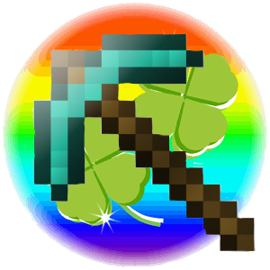
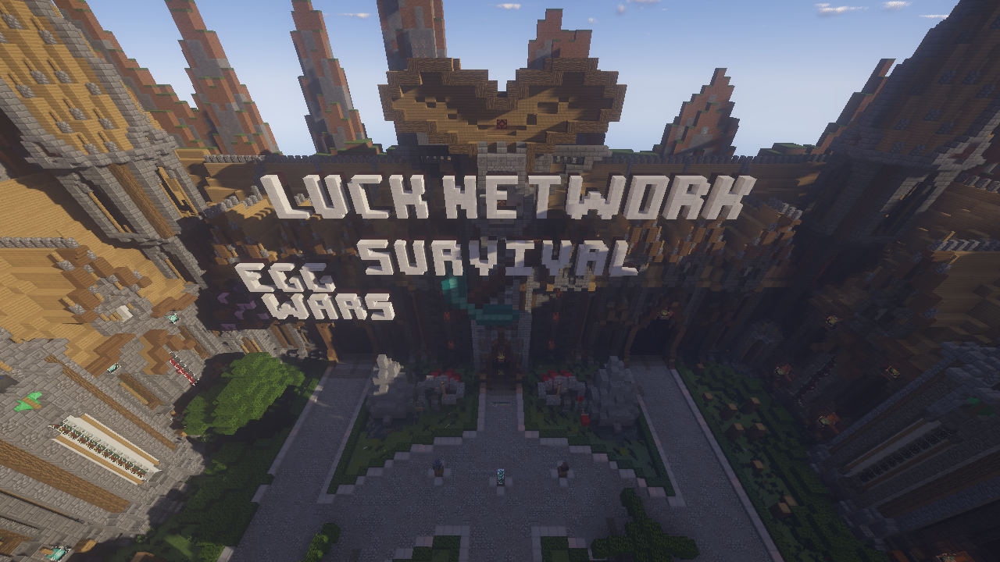
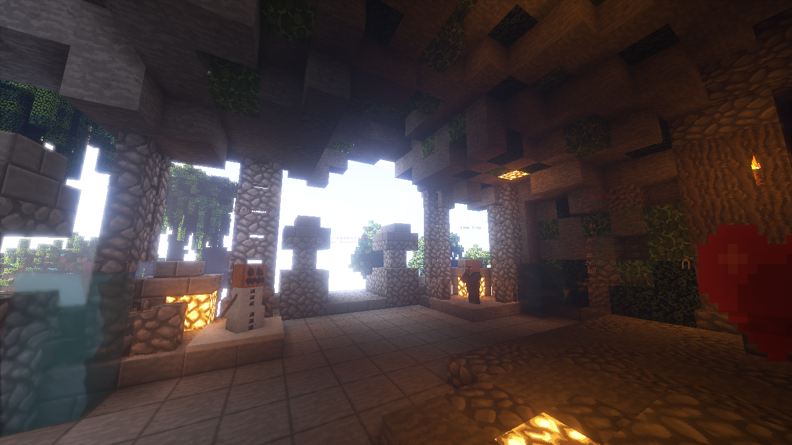
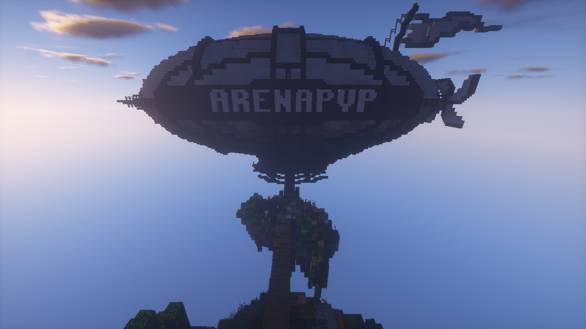

ホーム
(current)
Wiki
フォーラム
Twitter
サーバー情報
ランキング
処罰情報
試合記録



Luck Network
Japanese Minecraft Community and Servers
Previous
Next
KitPvP
オリジナル FFA サーバー！
ArenaPvP
多彩なキットで楽しもう！
（ボット戦もあるよ）
バニラ
(ほぼ)常に最新バージョンです。
新要素を自由に遊び尽くそう！
新ゲームモード、来年登場！
大型アップデートを予定しています。
lucknetwork.jp
お知らせ
ウェブサイトをリニューアルしました。
2018/11/10
ウェブサイトのデザインを一新しました。
以下の情報が追加されました:
プレイヤーページの実装
サーバー情報ページのデザインを変更
Japan Minecraft Servers
サーバーアドレス:
lucknetwork.jp
バージョン: 1.7.10 - 1.13.x
Twitter
Tweets by McLuckServer